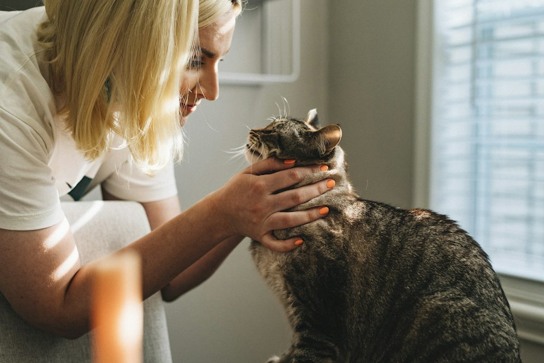
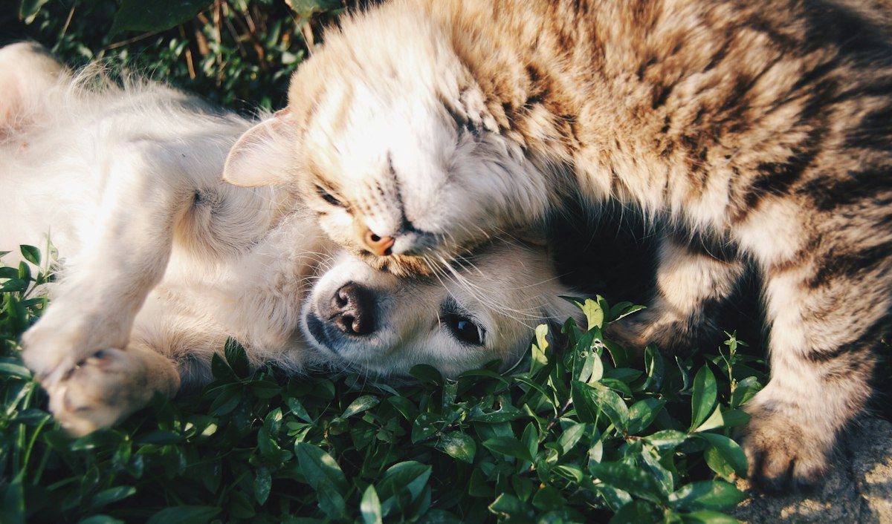

¿Qué es VETSERVICE2GO?
VETSERVICE2GO es una página web y una app para cuidar la salud de tu mascota de forma rápida y sencilla, sin llamadas ni filas.
Con tu cuenta puedes:
- 🐶 Registrar a tu perro, gato, ave, conejo u otra mascota, con su foto.
- 📅 Agendar citas eligiendo el día y un horario disponible.
- 🧾 Consultar e imprimir los recibos de tus citas.
- 🔁 Reagendar una cita si la veterinaria no te pudo atender.

¿Por qué elegirnos?
Trato con cariño
Atendemos a cada mascota con paciencia y cariño, como si fuera nuestra.
Precios claros
Conoces el costo de cada servicio antes de agendar. Sin sorpresas.
Citas sin filas
Ves al momento qué horarios están libres y eliges el que más te acomode.
Siempre informado
Si no podemos atender tu cita te decimos el motivo, y eliges otra fecha desde tu cuenta.
¿Cómo funciona?
1. Crea tu cuenta
Regístrate con tu nombre, correo y una contraseña. Solo toma un minuto.
2. Registra a tu mascota
Sube su foto y escribe su nombre, especie, raza y peso. Puedes registrar varias mascotas.
3. Agenda tu cita
Elige uno o varios servicios, el día en el calendario y un horario disponible. Tu recibo queda guardado.
4. Te atendemos
Llega con tu mascota a tu cita. Cuando terminamos, la verás como completada en tu cuenta.
Mascotas que atendemos
Cuidamos perros, gatos, conejos, aves y otras mascotas pequeñas, desde cachorros hasta los más grandes de la casa.
Consejos para cuidar a tu mascota
- 💉 Vacunas al día. Lleva su cartilla y pregúntanos qué vacuna le toca según su edad.
- 💊 Desparasitación. Protégela de lombrices, pulgas y garrapatas con la frecuencia que te indique el veterinario.
- 💧 Agua limpia siempre. Cámbiala todos los días, sobre todo cuando hace calor.
- 🦴 Alimento adecuado. Dale comida para su especie, edad y tamaño, y evita darle de lo que comemos nosotros.
- 🎾 Ejercicio y juego. Pasear y jugar todos los días la mantiene sana y tranquila.
- 🩺 Revisión cada año. Aunque se vea sana, una consulta al año ayuda a detectar problemas a tiempo.
📱 VETSERVICE2GO en tu celular
Descarga la app para Android y entra con la misma cuenta de la página. Las citas son las mismas en los dos lados: lo que agendes en la app lo ves aquí, y al revés.
Descargar app para Android (APK)Para Android 7.0 o más nuevo. Al abrir el archivo, el celular te pedirá permiso para instalar apps que no vienen de Google Play.
Misión y Visión

Misión
Brindar atención veterinaria de calidad, rápida y a precios justos, para que cada mascota reciba el cuidado que merece y cada familia tenga la tranquilidad de saber que su compañero está en buenas manos.
Visión
Ser el servicio veterinario de confianza de nuestra comunidad, reconocido por su trato amable, por usar la tecnología para facilitar el cuidado de las mascotas y por promover la tenencia responsable de animales.
Preguntas frecuentes
¿Cómo agendo una cita?
Crea tu cuenta, registra a tu mascota y entra a "Agendar cita". Ahí eliges los servicios, el día y uno de los horarios disponibles.
¿Puedo agendar para hoy mismo?
Las citas se agendan a partir del día siguiente. Si tu mascota tiene una urgencia, acude directamente a la veterinaria.
¿Cuánto dura una cita?
Cada cita dura 40 minutos. Hay cuatro horarios por la tarde: 15:30, 16:00, 16:30 y 17:00.
¿Puedo pedir varios servicios en la misma cita?
Sí. Marca todos los que necesites (por ejemplo, Consulta General y Vacunación) y el total se suma solo.
¿Qué pasa si no pueden atender mi cita?
Te avisamos en tu panel con el motivo, y tú eliges un nuevo día y horario para la misma cita, sin volver a pagar.
¿Puedo usar la app y la página con la misma cuenta?
Sí. La app y la página comparten la misma información: tus citas y tus recibos se ven igual en los dos lados.